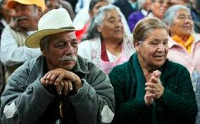

. MARCO JURIDICO- EN MATERIA DE
PROTECCION AL ADULTO MAYOR
La Constitución Nacional1 consagra que
Colombia es un Estado social de Derecho con
autonomía de sus entidades territoriales, así
mismo el artículo 42 establece que “La familia
es el núcleo fundamental de la sociedad”,
igualmente, el artículo 46 reza que “El Estado,
la sociedad y la familia concurrirán para la
protección y la asistencia de las personas de
la tercera edad y promoverán su integración a
la vida activa y comunitaria”.
Desde este contexto la legislación colombian
a protege a los adultos mayores, y es por
ello que la ley 599 de 2000, en su artículo
229, luego modificado por la ley 882 de
2004 tipifica la violencia intrafamiliar entre
cualquier miembro del núcleo familiar, dentro
de los que se encuentran especialmente los
ancianos2.
También según estudio realizado por el
Instituto de Medicina Legal en el año 2005
registró más de 4.000 casos de violencia
intrafamiliar hacia el adulto mayor en todo el
país, sin anotar los que no son denunciados
por las víctimas por ser usualmente su propia
familia sus agresores de los cuales dependen
afectiva y económicamente.
Asimismo, la Ley 1171 de 2007 estableció
algunos beneficios a las personas mayores
de 62 años (adulto mayor) para garantizar
sus derechos a la educación, a la recreación,
Entre los beneficios concedidos se encuentran
la reducción de un cincuenta por ciento
(50%) en las boleterías para asistir a los
espectáculos públicos, artísticos, culturales, y
recreacionales, como también en el transporte
urbano servicio público masivo, obtendrán
una tarifa diferencial inferior a la ordinaria,
además tendrán asientos preferenciales
debidamente señalizados. Como también, los
museos y los bienes de interés cultural de la
nación, distritos y municipios permitirán el
ingreso gratuito a los adultos mayores.
De otra parte, entre otros beneficios para los
adultos mayores se encuentran las ventanillas
preferenciales en las entidades del Estado que
prestan un servicio público. Respecto con
la salud, las entidades promotoras de salud
(EPS), cuando no suministren de manera
inmediata los medicamentos formulados que
se encuentren incluidos en el Plan Obligatorio
de Salud (POS) a las personas mayores de
62 años, deberán garantizar la entrega en su
domicilio dentro de las setenta y dos horas
(72) horas siguientes a su solicitud
